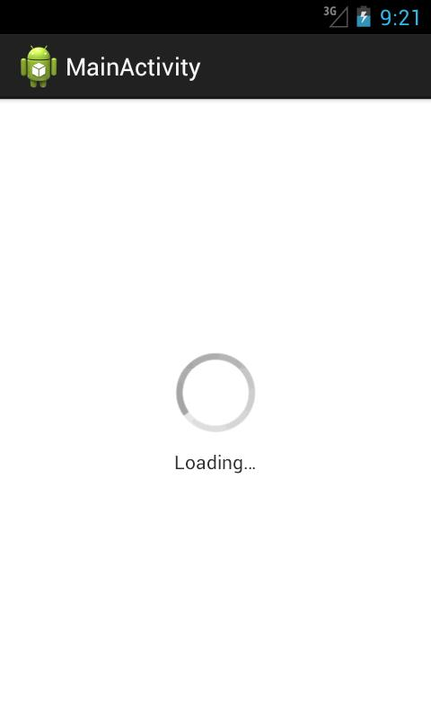
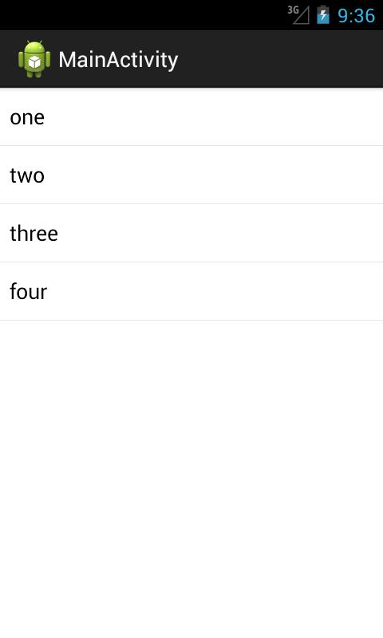
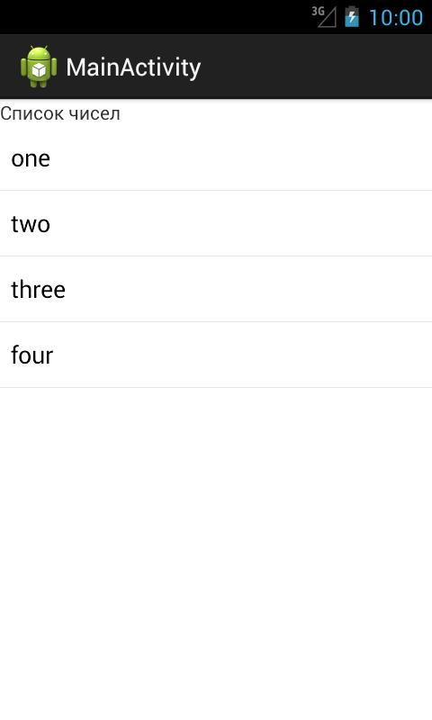
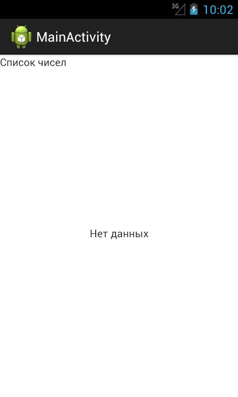
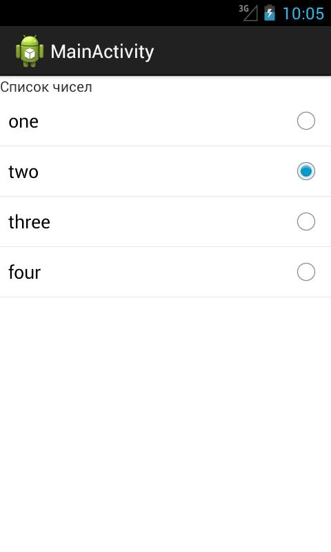
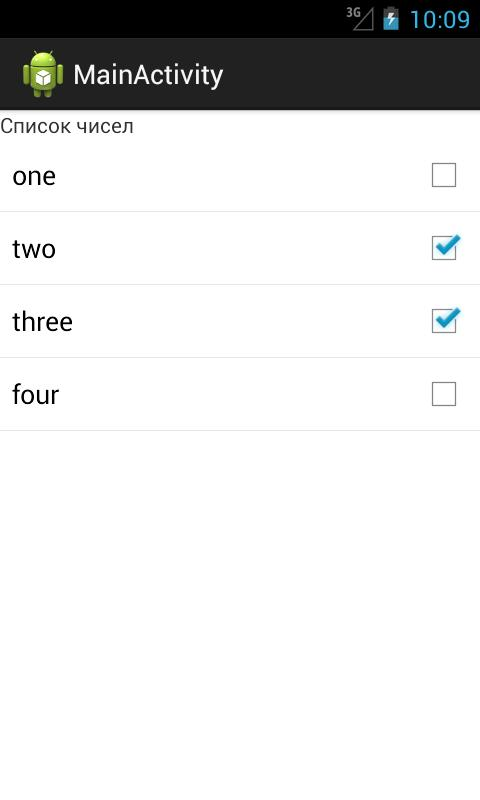
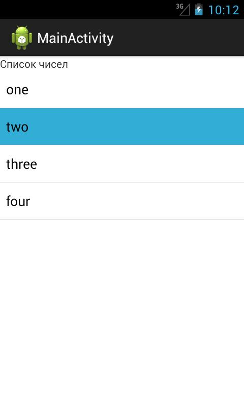
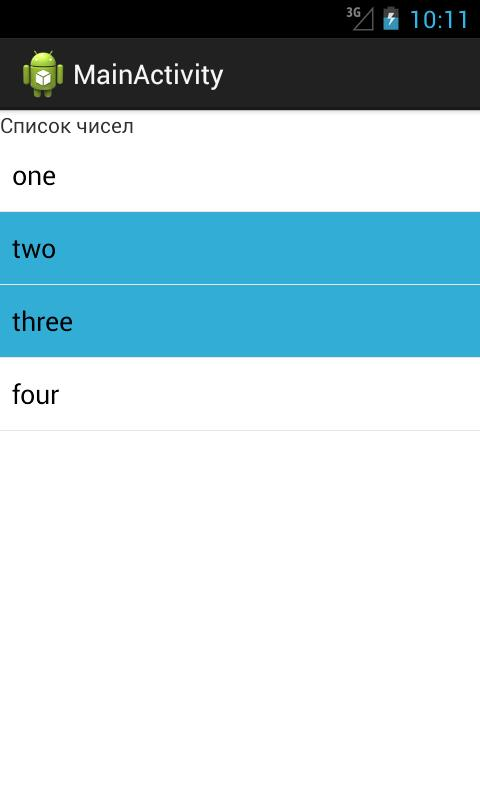
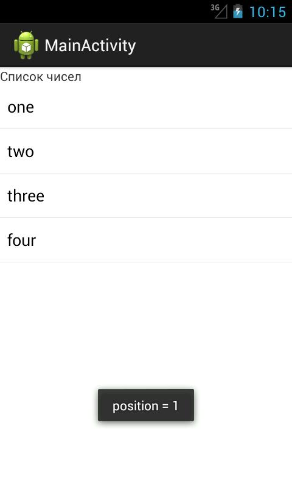

В этом уроке:
- работаем с ListFragment
Вернемся к фрагментам. В Android есть несколько полезных классов – наследников класса Fragment. Мы рассмотрим несколько из них. Начнем с ListFragment. В принципе, это просто Fragment, в котором есть методы, упрощающие доступ к ListView и некоторым его операциям.
Тут можно провести аналогию - для Activity есть класс наследник ListActivity. Когда мы только знакомились со списками, я не стал рассматривать этот класс, чтобы не вносить путаницы в непростую тему. Но в учебниках и документацие о нем обычно говорят. Думаю, многие уже сталкивались с ним и примерно знают, что это такое. Если да, то ListFragment будет совсем прост для понимания.
Напишем приложение и рассмотрим основные возможности ListFragment.
Создадим проект:
Project name: P1091_ListFragment
Build Target: Android 4.1
Application name: ListFragment
Package name: ru.startandroid.develop.p1091listfragment
Create Activity: MainActivity
Создадим класс фрагмента, наследующий не android.app.Fragment как обычно, а android.app.ListFragment.
MainList.java:
package ru.startandroid.develop.p1091listfragment;
import android.app.ListFragment;
public class MainList extends ListFragment {
}Класс так и оставляем пока пустым. И пока что не будем создавать Layout-файл для этого фрагмента. Дело в том, что ListFragment по умолчанию уже содержит ListView и мы вполне можем обойтись им. Адаптер мы пока также никакой не создаем, посмотрим чего получится.
Редактируем layout для MainActivity
main.xml:
<?xml version="1.0" encoding="utf-8"?>
<LinearLayout
xmlns:android="http://schemas.android.com/apk/res/android"
xmlns:tools="http://schemas.android.com/tools"
android:id="@+id/LinearLayout1"
android:layout_width="match_parent"
android:layout_height="match_parent"
android:orientation="vertical">
<fragment
android:name="ru.startandroid.develop.p1091listfragment.MainList"
android:layout_width="match_parent"
android:layout_height="match_parent">
</fragment>
</LinearLayout>Здесь только компонент fragment, использующий наш класс.
Все сохраняем, запускаем приложение.

ListFragment показывает нам, что он ждет данных.
Ок, давайте дадим ему данные. Перепишем MainList.java:
package ru.startandroid.develop.p1091listfragment;
import android.app.ListFragment;
import android.os.Bundle;
import android.widget.ArrayAdapter;
public class MainList extends ListFragment {
String data[] = new String[] { "one", "two", "three", "four" };
@Override
public void onActivityCreated(Bundle savedInstanceState) {
super.onActivityCreated(savedInstanceState);
ArrayAdapter<String> adapter = new ArrayAdapter<String>(getActivity(),
android.R.layout.simple_list_item_1, data);
setListAdapter(adapter);
}
}Мы создаем адаптер и используем метод setListAdapter, чтобы передать его списку. Обратите внимание - мы даже не создаем или не находим (findViewById) список (ListView), он уже есть где-то внутри фрагмента и метод setListAdapter сам знает, как до него добраться. В принципе, это и есть основная фишка ListFragment - нам не надо работать с ListView.
Все сохраним, запустим приложение.

Данные появились.
Еще раз обращаю ваше внимание на то, что мы вообще не создавали никаких layout с ListView. ListFragment работает с каким-то своим, встроенным списком.
Если же вас чем-то не устраивает этот дефолтный список, можно использовать свой layout-файл для фрагмента.
В strings.xml добавим строки
<string name="number_list">Список чисел</string>
<string name="empty">Нет данных</string>И создадим layout файл fragment.xml:
<?xml version="1.0" encoding="utf-8"?>
<LinearLayout
xmlns:android="http://schemas.android.com/apk/res/android"
android:layout_width="match_parent"
android:layout_height="match_parent"
android:orientation="vertical">
<TextView
android:layout_width="wrap_content"
android:layout_height="wrap_content"
android:text="@string/number_list">
</TextView>
<ListView
android:id="@id/android:list"
android:layout_width="match_parent"
android:layout_height="match_parent">
</ListView>
<TextView
android:id="@id/android:empty"
android:layout_width="match_parent"
android:layout_height="match_parent"
android:gravity="center"
android:text="@string/empty">
</TextView>
</LinearLayout>Первый TextView – просто заголовок списка. Далее идет ListView. Его ID обязательно должен быть равен @id/android:list. Чтобы ListFragment сам его нашел и мог с ним работать. Второй TextView – будет показан, если нет данных для списка. Его ID обязательно должен быть равен @id/android:empty.
Допишем в MainList.java метод создания View.
@Override
public View onCreateView(LayoutInflater inflater, ViewGroup container,
Bundle savedInstanceState) {
return inflater.inflate(R.layout.fragment, null);
}Фрагмент будет отображать компоненты из layout-файла, который мы только что создавали.
Все сохраняем и запускаем.

Видим заголовок и данные. Наш layout был использован.
Если не дать списку данные, то приложение будет выглядеть так

Отобразился наш второй TextView с ID = @id/android:empty. Причем, это вовсе не обязательно должен быть TextView. Главное тут именно этот ID. Компонент с этим ID будет показан вместо ListView, если нет данных.
Чтобы включать одиночный и множественный выбор, необходимо провести все те же действия, которые мы рассматривали в Уроке 43: передать в адаптер соответствующий layout-файл и включить соответствующий режим выбора для списка. В этом же 43-м Уроке можно посмотреть, как определять, какие пункты списка выбраны. Чтобы в ListFragment получить доступ к списку – используйте метод getListView.
Результаты включения режима выбора будут такие:
одиночный выбор

множественный выбор

Еще, как вариант, можно в адаптер передавать layout-файл android.R.layout.simple_list_item_activated_1.
В этом случае результаты будут такие:


Это хорошо подходит для случая, когда у вас на экране слева фрагмент-список, а справа фрагмент-содержимое и вы всегда видите какой именно пункт из списка сейчас просматриваете.
Чуть не забыл про самое главное ) Ловить нажатия можно в методе onListItemClick. Он очень похож на метод onItemClick из Урока 44.
Если добавим в MainList.java его реализацию:
public void onListItemClick(ListView l, View v, int position, long id) {
super.onListItemClick(l, v, position, id);
Toast.makeText(getActivity(), "position = " + position, Toast.LENGTH_SHORT).show();
}то при нажатии на пункт списка, увидим результат:
